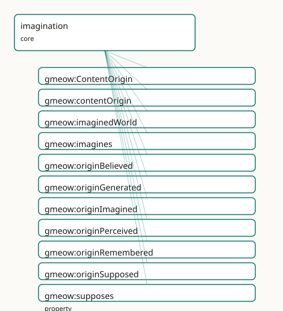

GMEOW Imagination Module
- IRI: https://blackcatinformatics.ca/gmeow/slices/imagination
- Tier: core
Group: core
What This Slice Covers
This slice owns 11 terms and contributes 1 mapping or projection rows. Use it when its terms match the native fact you want to preserve; use the linkage tables to see how those facts leave GMEOW for consumer vocabularies.
Dependencies
Consumers
- Reality-monitoring for the agent-memory flagship (Principle 14) — store_claim records a
gmeow:contentOrigin(gmeow:originPerceived/originRemembered/originBelieved/originImagined/originSupposed/originGenerated) so recall can tell a recalled fact from a confabulated or LLM-generated one,gmeow:originGeneratedbeing the disciplined hallucination/provenance marker; counterfactual rehearsal and planning rollouts entertain content withgmeow:imagines/gmeow:supposesagainst an imaginedgmeow:imaginedWorld(logic:, by reference); fiction and narrative interiority are shared licensed imagining bridginggmeow:veridicalityLicensedFalsehood(deception); abduction entertains candidate explanations as suppositions before any are believed.
Local Map

Examples
Counterfactual Rehearsal
- Source:
slices/core/imagination/examples/counterfactual-rehearsal.ttl - GMEOW terms:
gmeow:Agent,gmeow:Proposition,gmeow:contentOrigin,gmeow:imaginedWorld,gmeow:imagines,gmeow:originImagined,gmeow:originSupposed,gmeow:supposes - External prefixes:
logic
# SPDX-FileCopyrightText: 2026 Blackcat Informatics® Inc. <paudley@blackcatinformatics.ca>
# SPDX-License-Identifier: CC-BY-4.0
#
# Worked example — counterfactual rehearsal. An agent SUPPOSES a proposition (a
# what-if premise), opening an imagined gmeow:imaginedWorld (a logic:World, BY
# REFERENCE — no triple is asserted INTO the logic: namespace by the module; the
# example merely instantiates the open-range target), and IMAGINES the scene that
# would obtain in it. The supposed premise and the imagined scene carry their
# reality-monitoring source via gmeow:contentOrigin (originSupposed / originImagined),
# so nothing here is mistaken for a perceived or remembered fact. No truth bit
# anywhere: supposing and imagining assert neither truth nor commitment.
@prefix gmeow: <https://blackcatinformatics.ca/gmeow/> .
@prefix logic: <https://blackcatinformatics.ca/logic/> .
@prefix ex: <https://blackcatinformatics.ca/gmeow/examples/imagination/> .
@prefix rdfs: <http://www.w3.org/2000/01/rdf-schema#> .
# --- The agent and the what-if premise she takes on hypothetically.
ex:lillith a gmeow:Agent ;
gmeow:supposes ex:interestRatesDouble ; # held AS-IF, not believed
gmeow:imagines ex:recessionScene . # the scene she pictures under it
# --- The supposed proposition. Its reality-monitoring source is "supposed": it is
# entertained for argument, never asserted as a fact.
ex:interestRatesDouble a gmeow:Proposition ;
rdfs:label "interest rates double next year"@en ;
gmeow:contentOrigin gmeow:originSupposed .
# --- The imagined counterfactual world the supposition opens. Typed logic:World by
# reference (the logic slice's counterfactual-world machinery); imagination USES
# the modal machinery without the slice depending on logic:.
ex:worldRatesDouble a logic:World ;
rdfs:label "the world where rates double"@en .
# --- The supposition and the imagining are scoped to that imagined world.
ex:interestRatesDouble gmeow:imaginedWorld ex:worldRatesDouble .
ex:recessionScene gmeow:imaginedWorld ex:worldRatesDouble .
# --- The imagined scene. Its source is "imagined": quasi-perceptual content the
# agent generates, the canonical thing reality-monitoring must NOT later misread
# as perceived or remembered.
ex:recessionScene a gmeow:Proposition ;
rdfs:label "shuttered shops on the high street"@en ;
gmeow:contentOrigin gmeow:originImagined .
Reality Monitoring
- Source:
slices/core/imagination/examples/reality-monitoring.ttl - GMEOW terms:
gmeow:Agent,gmeow:Proposition,gmeow:Standpoint,gmeow:StandpointClaim,gmeow:accordingTo,gmeow:claimModality,gmeow:claimVeridicality,gmeow:contentOrigin,gmeow:methodDirectObservation,gmeow:methodExpertJudgement
# SPDX-FileCopyrightText: 2026 Blackcat Informatics® Inc. <paudley@blackcatinformatics.ca>
# SPDX-License-Identifier: CC-BY-4.0
#
# Worked example — reality-monitoring, the flagship. The SAME content (a claimed
# meeting) carries TWO coexisting gmeow:contentOrigin attributions from two vantages:
# the agent recalls it as gmeow:originRemembered, while an auditor reviewing the
# agent's memory marks it gmeow:originGenerated — a confabulation / hallucination
# synthesised by the model, not actually remembered. Neither overwrites the other
# (Principle 9, vantage-indexed; Principle 10, retain-never-delete): both are recorded
# as gmeow:StandpointClaims, whose attribution rides gmeow:vantage. Origin
# (where the content came from) is kept SEPARATE from veridicality (whether it is
# true — gmeow:claimVeridicality, deception slice, by reference) and from authorship
# (gmeow:accordingTo). This is exactly the recalled-vs-confabulated discrimination the
# agent-memory product needs.
@prefix gmeow: <https://blackcatinformatics.ca/gmeow/> .
@prefix ex: <https://blackcatinformatics.ca/gmeow/examples/imagination/> .
@prefix rdfs: <http://www.w3.org/2000/01/rdf-schema#> .
# --- The content whose origin is in question.
ex:meetingHappened a gmeow:Proposition ;
rdfs:label "we agreed the budget at the March meeting"@en .
# --- Vantage 1: the agent, who recalls the content as a memory.
ex:lillith a gmeow:Agent .
ex:lillithView a gmeow:Standpoint ;
gmeow:sharpens gmeow:universalStandpoint .
ex:agentRecall a gmeow:StandpointClaim ;
gmeow:vantage ex:lillithView ;
gmeow:observedFeature ex:meetingHappened ;
gmeow:observationMethod gmeow:methodDirectObservation ;
gmeow:claimModality gmeow:probable ;
gmeow:contentOrigin gmeow:originRemembered . # the agent takes it as recalled
# --- Vantage 2: an auditor reviewing the agent's memory, who finds no grounding and
# marks the same content as model-generated (a confabulation). The origin
# attributions COEXIST; the auditor does not delete the agent's, it adds its own.
ex:auditorView a gmeow:Standpoint ;
gmeow:sharpens gmeow:universalStandpoint .
ex:auditorAssessment a gmeow:StandpointClaim ;
gmeow:vantage ex:auditorView ;
gmeow:observedFeature ex:meetingHappened ;
gmeow:observationMethod gmeow:methodExpertJudgement ;
gmeow:claimModality gmeow:refuted ;
gmeow:contentOrigin gmeow:originGenerated . # the auditor: synthesised, not remembered
Terms
Classes
| Term | Label | Definition |
|---|---|---|
gmeow:ContentOrigin |
Content Origin | The reality-monitoring source of a piece of content — where it came from in the agent's mental economy: perceived from the world, retrieved from memory, held a... |
Properties
| Term | Label | Definition |
|---|---|---|
gmeow:contentOrigin |
content origin | Marks a piece of content with its reality-monitoring source — one of the closed gmeow:ContentOrigin value vocabulary. The DOMAIN is left intentionally OPEN: th... |
gmeow:imaginedWorld |
imagined world | Relates an imagining or supposition to the imagined / counterfactual WORLD it explores — the reified context within which the as-if content is evaluated. Both... |
gmeow:imagines |
imagines | An agent entertains content AS-IF — quasi-perceptually, decoupled from current perception and from belief: picturing a scene, an object, or a situation without... |
gmeow:supposes |
supposes | An agent takes a proposition on HYPOTHETICALLY — for the sake of argument or exploration, in a suppositional mood, without holding it true. The propositional s... |
Individuals
| Term | Label | Definition |
|---|---|---|
gmeow:originBelieved |
believed | Content HELD AS BELIEF — taken to be true (gmeow:believes, epistemics, by reference), whatever its ultimate source. The doxastic origin, distinct from the perc... |
gmeow:originGenerated |
generated | Content SYNTHESISED BY A GENERATIVE PROCESS — machine-produced, as when a language model samples its latent space (the AI face of imagination). The disciplined... |
gmeow:originImagined |
imagined | Content GENERATED BY IMAGINING — entertained quasi-perceptually as-if (gmeow:imagines; the occurrent face is a gmeow:processImagining, mentation, by reference)... |
gmeow:originPerceived |
perceived | Content originating in PERCEPTION — registered from the environment (or an internal bodily state) as it occurred. The externally-grounded source, the occurrent... |
gmeow:originRemembered |
remembered | Content RETRIEVED from memory — recalled into present awareness, not currently perceived (the occurrent face is a gmeow:processRecollection, mentation, by refe... |
gmeow:originSupposed |
supposed | Content entertained as a SUPPOSITION — taken on hypothetically for argument or exploration (gmeow:supposes), not asserted. The hypothetical source, characteris... |
Linkages
- Rows: 1
- Projection profiles: -
- External vocabularies:
prov
| Source | Kind | Profile | Predicate/Relation | Target | Evidence |
|---|---|---|---|---|---|
gmeow:originGenerated |
equivalence | - |
skos:relatedMatch | prov:Generation | gmeow-imagination.sssom.tsv; gmeow:eqImagination001; confidence 0.4 |
Guide
Imagination
The imagination slice adds the third attitude-flavour of mind. Where the
epistemics slice relates an agent to a gmeow:Proposition held
true (gmeow:believes) or taken on pragmatically (gmeow:accepts), and the
inquiry slice relates it to a gmeow:Question held open,
imagination relates an agent to content entertained as-if — quasi-perceptual or
suppositional, decoupled from both belief and current perception. It is the faculty
that actually uses the counterfactual worlds of the logic slice, and
it carries the slice's flagship deliverable: the content-origin / reality-monitoring
vocabulary that lets agent memory tell a recalled fact from a confabulated or
machine-generated one.
The missing as-if attitude
A model of mind that records only belief and acceptance cannot represent entertaining
— picturing a scene that is not before you, or supposing a premise to chase its
consequences. Imagining is neither asserting (no mind-to-world fit, unlike belief) nor
committing (no working-premise role, unlike acceptance): it holds content as-if.
The imagining episode is already modelled in the mentation slice as a
gmeow:MentalProcess with gmeow:mentalProcessType gmeow:processImagining; this slice
adds the content / attitude layer over it — reused by reference, never re-minted
(Principle 6).
The imagination attitude spine
gmeow:imagines · gmeow:supposes
Two flat agent→content attitudes (domain gmeow:Agent, OPEN range, non-functional)
— the cheap 80 % surface (Principle 4 / Principle 13), mirroring the epistemics doxastic
spine and the inquiry erotetic spine. There is no rdfs:subPropertyOf between them:
quasi-perceptual imagining and propositional supposition are two distinct attitudes, not
a hierarchy.
gmeow:imagines— entertains content quasi-perceptually as-if: picturing a scene, an object, a situation, without holding it true. The base imaginative attitude, the natural companion of agmeow:processImaginingepisode; the home of counterfactual rehearsal, planning rollouts, and fiction.gmeow:supposes— takes a proposition on hypothetically, for the sake of argument or exploration (the antecedent of a conditional, the hypothesis of a reductio). It characteristically opens an imagined world (gmeow:imaginedWorld) explored under it.
Both are decoupled from gmeow:believes (holds true) and gmeow:accepts (pragmatic
working commitment); imagining and supposing assert neither truth nor commitment. From
whose vantage content is entertained rides gmeow:accordingTo on the statement, never a
truth bit here.
Content origin — reality-monitoring (the flagship)
gmeow:ContentOrigin · gmeow:contentOrigin
gmeow:ContentOrigin is a value vocabulary (gufo:AbstractIndividualType ⊑
gufo:QualityValue) whose members are individuals, never subclasses (Principle 9, the
gmeow:MentalProcessType / gmeow:QuestionType idiom): it records where a piece of
content came from in the agent's mental economy. It implements Marcia Johnson's
source-monitoring framework (by reference) — the discrimination an agent (or an
auditor) makes between a recalled fact and a confabulated or machine-generated one.
| Individual | Source |
|---|---|
gmeow:originPerceived |
registered from the environment (a gmeow:processPerception) |
gmeow:originRemembered |
retrieved from memory (a gmeow:processRecollection) |
gmeow:originBelieved |
held as belief (gmeow:believes), whatever its ground |
gmeow:originImagined |
generated by imagining (gmeow:imagines) — the canonical confabulation source |
gmeow:originSupposed |
entertained as a supposition (gmeow:supposes), scoped to an imagined world |
gmeow:originGenerated |
synthesised by a generative process — the AI face: an LLM sampling its latent space |
gmeow:contentOrigin (open domain, range gmeow:ContentOrigin) marks content with its
source. It is non-functional and vantage-indexed (Principle 9): an agent may take
content as gmeow:originRemembered while an auditor marks the same content
gmeow:originGenerated, and both coexist — whose attribution it is rides
gmeow:accordingTo, a superseded attribution is suppressed with gmeow:displayable false
rather than deleted (Principle 10). The flagship store_claim records a
gmeow:contentOrigin so recall can tell a recalled fact from a confabulated one.
gmeow:originGenerated marks provenance, not identity. It records that content was
machine-synthesised without asserting that generative sampling is imagining; the
human↔machine mapping is a shared faculty with substrate-specific realisations, not an
equivalence (umbrella guardrail). A generated claim later misread as remembered is
exactly the failure this value guards against.
Three axes co-apply and stay separate: origin (gmeow:contentOrigin — where content
came from), veridicality (gmeow:claimVeridicality, deception, by
reference — whether it is true / untrue / licensed-false), and attribution
(gmeow:accordingTo — who holds it).
Imagined worlds
gmeow:imaginedWorld
Relates an imagining or supposition to the imagined / counterfactual world it
explores. Both domain and range are OPEN: the target is a logic:World (the
counterfactual-world machinery of the logic slice), but the link is carried
by reference (Principle 5) — no triple is asserted into the logic: namespace and
logic is not a declared dependency, exactly as the inference slice
references the logic: strength axes without importing logic. This is the seam at which
imagination uses the modal machinery — a supposition opens a counterfactual world and
the imagining explores it — without coupling the slice's import closure to logic:. It
is non-functional: one rehearsal may branch into several imagined worlds.
Content-mode siblings, no subsumption
Imagined and suppositional content sit beside gmeow:Proposition (assertoric),
gmeow:Goal (optative), and gmeow:Question (erotetic) as a mode of entertaining,
bridged by reference, never via rdfs:subClassOf (the direction-of-fit precedent). This
slice therefore mints no new content class: the attitude verbs plus the
gmeow:originImagined / gmeow:originSupposed markers carry the as-if.
Fiction is licensed imagining
Shared, audience-understood imagining (fiction, pretense, role-play) bridges
gmeow:veridicalityLicensedFalsehood (deception slice) — referenced,
not re-minted; licensed falsehood is never deception. Narrative interiority and the music
extension are the downstream consumers.
SSSOM alignments (mappings/equivalences.ttl)
Reality-monitoring source values (Johnson's source-monitoring framework) and the as-if
attitudes (Walton's mimesis as make-believe) are academic frameworks with no stable,
resolvable RDF namespace, so they are named in prose rather than as TermEquivalence
rows. One genuine loose alignment is recorded: gmeow:originGenerated skos:relatedMatch
PROV-O's prov:Generation — content whose origin is a generative activity — a deliberately
low-confidence relatedMatch (PROV models activity-provenance, not a content-origin value).
Dependencies
sliceDependsOn lists only kernel — the single asserted foreign IRI is
gmeow:Agent (the domain of gmeow:imagines / gmeow:supposes). mentation
(gmeow:processImagining), logic (logic:World), deception
(gmeow:veridicalityLicensedFalsehood), and epistemics (gmeow:Proposition /
gmeow:believes / gmeow:accepts) are all consumed by reference (prose only, no
asserted triples into those namespaces), so the slice stays DL-clean standalone.
Verified by construction
tests/test_imagination.py pins the term set, the value-vocab discipline (individuals,
never subclasses), the OPEN domains/ranges, the absence of rdfs:subPropertyOf among the
spine, the lang-tag discipline (@en on every localizable literal), and the
by-reference discipline (no asserted logic: triple; sliceDependsOn = kernel only).
The two examples/ graphs — counterfactual rehearsal and reality-monitoring — load and
validate against the merged SHACL shapes.